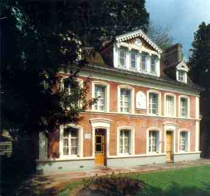
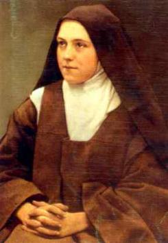
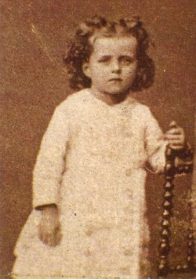
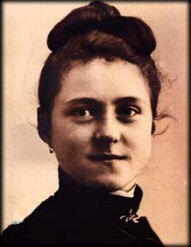
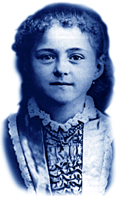
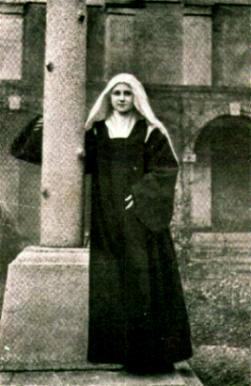

A ORAÇÃO

 “Para mim, a Oração é um desabafo
ardente do coração, um grito de reconhecimento e de amor, quer no meio da tribulação,
quer no auge da alegria! É uma força misteriosa e sobrenatural que dilata a alma
e a une a DEUS.” (pág 229)
“Para mim, a Oração é um desabafo
ardente do coração, um grito de reconhecimento e de amor, quer no meio da tribulação,
quer no auge da alegria! É uma força misteriosa e sobrenatural que dilata a alma
e a une a DEUS.” (pág 229)
“Disse um sábio: me dá um ponto de apoio
que com uma alavanca levantarei o mundo. O que Arquimedes não conseguiu, lograram-no
plenamente os Santos. O Todo-Poderoso deu-lhes um ponto de apóio, ELE Mesmo: DEUS,
e com a alavanca da Oração, que tudo abrasa em incêndios de amor, mexeram e remexeram
o mundo. Pelo mesmo processo, continuam e continuarão os Santos da Igreja realizando um
trabalho maravilhoso até a consumação dos séculos”.(pág 247)

MEU
LUGAR NA IGREJA
“Na primeira epístola de São Paulo aos
Coríntios, o
Apóstolo diz que nem todos podem ser ao mesmo tempo apóstolos,
profetas e doutores, porque a Igreja é composta de diferentes membros e que
portanto, os olhos não fazem o serviço das mãos. Continuei na leitura e encontrei
este conselho:
“Aspirai aos dons mais altos. Aliás, passo a indicar-vos um caminho que ultrapassa
a todos”.(1 Cor 12,31) E explica
o Apóstolo como todos os dons, ainda os mais perfeitos, nada são sem o Amor
(a Caridade), por que o Amor (a Caridade) é o caminho mais excelente para
encontrarmos DEUS. Esta revelação surpreendeu-me e colocou a paz em meu
espírito. Agora, com mais tranquilidade, continuo a busca de meu lugar na Igreja,
porque quando examinei os membros descritos por São Paulo, não tinha encontrado
no corpo místico um lugar para mim. Foi a Caridade (o Amor) que me deu a chave
de minha Vocação. Isto porque, se o corpo da Igreja era composto de membros
diferentes, não lhe podia faltar o mais nobre e o mais necessário dos órgãos:
o coração. Ora, então a Igreja tinha também um coração e este, naturalmente,
se abrasava em Amor (em Caridade). E também, não podemos nos esquecer
que o Amor (a Caridade), é responsável pelas ações dos outros membros
e inclusive, regula a intensidade de suas atuações. Se ele se extinguir, os
Apóstolos não anunciariam o Evangelho e nem os mártires derramariam
o seu sangue. Desse modo, fiquei finalmente entendendo que o Amor (a
Caridade) era o Cofre onde se encerravam todas as Vocações, que o Amor (a
Caridade) era tudo, que abrangia todos os tempos e todos os lugares, porque
era eterno! Então, no auge de minha delirante alegria, exclamei: “JESUS meu Amor!
Encontrei por fim a minha Vocação! “Vocação para Amar!” Sim, encontrei o lugar que me compete no seio
da Igreja, e esse lugar fostes VÓS que me destes, meu JESUS querido.
Assim, no coração da Igreja nossa Mãe, eu serei o Amor!... Deste modo
serei tudo, e assim se realizará o sonho de toda a minha vida”.
(pág 260/261)



SOFRIMENTO COTIDIANO
Em certa ocasião alguém disse a Teresinha:
"É voz corrente
que nunca teve muitos sofrimentos"... A
Santa sorrindo, apontou para um copo que continha uma poção de cor avermelhada, e disse:
"Vê aquele copinho?
Talvez pensem que contém um delicioso e agradável licor: é a bebida mais amarga de
quantas já tomei. Pois bem, assim aconteceu durante toda a minha vida. Quem olha para
mim e me vê sempre alegre e sorridente, pode imaginar que vivo me extasiando com
bebidas deliciosas e delicadas, quando na verdade tudo sempre foi um amargor. E
quando digo amargor, não quero dizer que a minha vida foi amargurada, porque me
acostumei a viver alegre, embora sentisse os constantes paladares amargos que
DEUS permitiu que eu experimentasse, ao longo de minha caminhada
existencial”.
(pág 282/283)
Próxima Página
Página Anterior
Retorna ao Índice